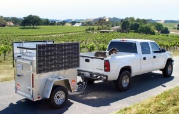

Recently we were part of an effort to deploy solar generators to triage tents and induction centers at West Coast hospitals. We are displacing diesel generators and improving the air quality at these critical medical intake points. Please contact our office today if your medical facility is in need of similar equipment.
{kind=link}
{kind=link}
Safety shutoff starts: About 185,000 PG&E customers in Bay Area without power
OAKLAND, Calif. (KTVU) – As the first phase of power outages due to PG&E’s Public Safety Power Shutoff starts, the number of customers affected in the San Francisco
Bay Area has rapidly increased early Wednesday morning.
About Bay Area 186,595 customers were without power as of 5:30 a.m., per PG&E’s outage map…
Shortly after receiving a master’s degree in Chemistry from UC Berkeley in 1943, John Dobson found himself attending a lecture given by a Vedantan (Hindu) Swami. Fascinated by the Vedantan worldview, Dobson decided to join the local monastery as a monk of the Ramakrishna Order. During what would become a 23-year tenure at the monastery, John was tasked with reconciling astronomy with Vedantan doctrine. In his efforts to do so he became a master telescope builder and avid astronomer. His love for astronomy and deep desire to share his cosmic knowledge with others slowly began to interfere with the Vedantan curriculum – leading to his eventual expulsion. Unrestricted by the monastery, John Dobson would go on to become a legendary amateur astronomer – most well-known for his contributions to “sidewalk astronomy.” Dobson’s eagerness to share the universe with others led him across the United States where he taught free telescope building workshops and astronomy classes in public areas. Mr. Dobson is no longer with us, but his legacy lives on through the thousands of people who he inspired to take a deeper look at the sky.
One such Dobsonian disciple is John Nejedlo, a retired police officer turned high school science teacher. John and his wife, Brenda, recently decided to leave their home, jobs and livelihood behind so that they could hit the road full time. Northeast Wisconsin had treated the Nejedlo’s well, but there was still so much to see – both on land and up in the sky.
Prior to embarking on their journey, they had a serious problem to solve – where and how were they going to store their collection of reflector and refractor telescopes? Some of their telescopes are quite large (in some cases up to 8 feet tall!) and very sensitive to both heat and humidity. They knew a climate-controlled trailer was necessary, but they weren’t sure how they would power the air conditioning system – especially during boondocking adventures without electrical hookups. A gas generator was considered but the constant refueling and noise would have made star-gazing sessions much less pleasant. Further research eventually led John to Mobile Solar. After seeing the MS-Series he knew he had found the answer. Not only would the trailer house the telescopes, but the added solar-plus-battery storage could power the air conditioning units as well – without fuel or noise!
After calculating the various electrical loads and space required to house the scopes, it was determined that an MS-325 would be the perfect unit to get the job done. With its 12 high-efficiency solar panels, large battery bank and considerable interior space, the MS-325 checked all of the Nejedlo’s boxes and then some. Mobile Solar worked with Look Trailers to fully insulate the interior of a one-off, slightly elongated trailer that would better accommodate a custom solar panel racking system. Once the trailer was complete, John and Brenda were now ready to hit the road with their telescopes in tow.
The Nejedlo’s have been on the road for just about a year now and are loving every second of it. Their off-grid astronomy outfit is certainly one of a kind, and as such, it has garnered its fair share of attention. YouTube producers have featured the Nejedlo’s in their vlogs. Eric Odom, the lead producer of Epic Nomad TV, not only wants to feature the Nejedlo’s in one of his mini-series but will use their trailer to power his film equipment as well. Shooting a TV series is energy intensive work and it turns out that the MS-325 is a perfect solution (albeit a bit over-sized) for storing and powering film equipment in an off grid environment. In addition to the media production requests, John and Brenda were recently asked by the Family Motor Coach Association to headline and present at one of their rallies in Oklahoma. Here they will have an opportunity to showcase their off-grid chops to hundreds.
Despite all of the attention that the telescopes and trailer may get, the primary goal of the Nejedlo’s journey is to turn that attention back up at the stars. Following in the footsteps of the great John Dobson, John and Brenda frequently put on free astronomy sessions at schools and national parks. Their arsenal of telescopes gives them the ability to operate day or night, with or without the presence of light pollution. Several of their telescopes can hook up to a TV screen so that multiple people can take a peek into space at the same time. John often lets participants control the telescopes themselves so that they can feel a more personal relationship with what they are looking at. He says that he “gets the tingles” when he is able to show people where they stand in the universe – likely the same tingles that motivated John Dobson to embark on some similar journey decades before. The Nejedlo’s are certainly worthy torch bearers on the Dobsonian mission to educate the world on our place in the universe and doing so in such an environmentally unobtrusive way makes them that much more admirable. There is something beautiful about using the energy from the stars to gaze right back at them.

“The end of the solar industry as we know it!” “20,000 jobs down the drain!” It’s safe to say the majority of the solar industry was on edge leading up to signing of the Trump Administration’s solar tariff. A couple months have passed since the infamous 30% tariff on imported solar panels was enacted and now that the dust has settled, lets take an objective look at the effects of this controversial piece of legislation.
Although it is hard to make the case that this tariff will have a positive overall impact on the US solar industry, its predicted consequences (both positive and negative) have largely been blown out of proportion. Even the tariff itself is not as extreme as many initially feared. It currently sits at 30% and will decline 5% per year before being phased out completely in 2022. When compared to the rapidly shrinking cost of solar panels, this initial 30% “hit” initiated a negligible effect on the price that customers pay for solar energy. Many don’t realize that solar panels account for a small percentage of residential installation’s cost and experts have seen only a 3-4% increase in the price homeowners are paying for their systems. In a market that has seen the average price-per-watt drop from $6.00 to $3.00 in only a few years, a 4% price increase is a minor speedbump as the cost of installed systems continues to decline.
Utility scale solar has seen greater repercussions as the price of panels constitutes a greater share of a large-scale project’s total cost. A handful of large projects have recently been cancelled or put on hold in the wake of the tariff but the fact still remains that solar energy is the least expensive energy on the planet. New tariffs on steel and aluminum, materials which are vital to pipeline and powerplant construction, have made fossil-fuel-based energy considerably less attractive when put up against renewables. As solar installation and material costs continue to drop it will become increasingly difficult to justify a fossil fuel power plant over a large field of solar panels.
We at Mobile Solar have always been firm believers in using parts that are made in the USA. Suniva’s bankruptcy left us without one of our favorite US-based suppliers and we have since turned to LG panels that are imported from South Korea. American solar panel manufacturers like Suniva simply could not compete with the price and quality of panels that have been coming out of Asian countries where labor is cheap and governments heavily subsidize manufacturers. Now as automation lessens the benefits of cheap labor and tariffs increase the cost of shipping panels overseas, several of the world’s largest solar panel manufacturers are expediting their previously drawn up plans to set up shop in the United States. However, most of these fully automated manufacturing plants are to be owned by foreign companies and produce few new jobs – creating little benefit for the United States. But one more American job is a move in the right direction.
It is yet to be seen whether or not the benefits of the tariff outweigh its consequences. Either way, the imbalance is insignificant and the solar industry will continue to grow as it outshines its more expensive and less sustainable competition. As long as we are making progress towards a better future for our planet, well, we are making progress.
When retired air traffic controller Mark Motto approached Mobile Solar in 2014 he was looking for a solar generator that could do two things. First, it needed to produce ample clean energy to consistently charge the batteries of his daily driver – a first generation Nissan Leaf. Second, it needed to be mobile enough to bring on camping trips so that he and his family could enjoy all of the comforts of home while visiting remote campsites without electrical hook-ups. Mark quickly came to the conclusion that the MS-225 (often refer to as the “hot rod” of solar generators) was the perfect unit for the job. Its small size and high output inverter system provided everything Mark thought he would need – and more.
Since taking delivery of his MS-225, Mark estimates 20,000 miles have been driven with energy supplied by the system. Recently he added 6 additional panels on an auxiliary trailer that sits adjacent his MS-225 and feeds power to the MS-unit. Rain or shine, his solar generator can reliably provide enough energy to propel his Leaf in and out of town for daily errands. Mark notes that his high output inverters allow for Level 2 charging, on sunny days. When the weather isn’t cooperating he relies on Level 1 charging.
When it is time to hit the road for one of the family’s frequent camping trips, the trailer is easily disconnected from the auxiliary solar trailer and hooked up to Mark’s truck. The unit is consistently towed on long-distance road trips (in some cases over 1,000 miles) across the United States and shows no sign of slowing down. The constant shaking and rattling from these outings have proven to be no match for the rock-solid MS-225 and it continues to work flawlessly no matter what is thrown at it, says Mark.
Although the unit has surpassed expectations related to its original duties as car charger and camp site enhancer, Mark has found further enjoyment from its unintended uses. Now living on a small 42 acre farm in W North Carolina, Mark has discovered the unit to be quite useful in his efforts to maintain and expand his organics-focused agriculture operation. The mobility of the system allows him to move it around to parts of the farm where electrical power is unavailable. When the polar vortex hits and temperatures drop well below freezing, Mark brings his MS-225 over to the livestock area so that it can provide power to a water heater that keeps the drinking water from freezing. It can also be used to provide light and heat for the chickens in his small coup.
One of Mark’s favorite memories with his unit came when his son-in-law, a licensed building contractor, came out to the farm to build a 40 foot barn. His son arrived onsite with his crew, power tools and a 5500 watt gas-powered generator. Mark asked, “what did you bring that thing for?” and pointed to the MS-225 sitting silently in the field. After some initial heavy skepticism, Mark’s son completed the project without once turning on the gas generator. He was shocked by the ease with which the solar generator handled his power tools – tools, which gave the gas generator problems.
Despite currently powering both his farm and his vehicle, Mark thinks his MS-225 has yet to reach its full potential. His next endeavor includes hooking the system up to a critical loads panel on his home so that he can keep the lights, fridge and other necessary circuits powered in the somewhat common event of a power outage.
When asked if there were any shortcomings or regrets associated with the unit Mark quipped that his “only regret was not purchasing the unit sooner!” He admitted that going with lighter lithium batteries would make life a little bit easier but he doesn’t feel that the additional cost was worth it. As a parting note, Mark offered some advice to anyone thinking of purchasing a Mobile Solar generator: “Just as a farmer can never have too big of a tractor, you can never have too much solar!”
Whereas we commend France for striving to expand green rooftops, we prefer to see incentives, not mandates, when it comes to pushing renewable energy and sustainability. That said, the environmental and energy saving benefits of green rooftops are significant and the backers of this movement should be applauded.
All off-grid solar power systems need an enclosure to protect the components, whether they are mobile or not. A trailer just happens to provide the required features, at a competitive cost. The ruggedized cargo trailers we use as a platform for our MS-Series provide the following benefits: 1) They provide a dry, clean, rodent-proof space that protects the system’s electrical components. 2) They are theft resistant and allow the user to move in an emergency, or move seasonally in the case of a seasonal home. 3) One of the biggest advantages is the extra space provided inside the trailer. Our past customers have used this additional space to store tools, food, sensitive electronics and emergency supplies. Some have set up mobile office spaces for jobsites, remote monitoring or surveillance.
{kind=link}
{kind=link}
One of Mobile Solar’s MS-150 lithium solar generators will be powering this weekends a Earth Day celebration at the Design Village in Cal Poly’s Canyon! We are glad to apart of this great annual event.
Learn more about the event here http://cfs.calpoly.edu/earth_day.html
Larry Hagman was a motivated, inspired and proud leader in the Green Energy space. And we were honored when he entrusted Mobile Solar to outfit his Air-stream motor-coach with solar energy.
{kind=link}
Here are words from Hagman himself, which can be found on his website:
“Now, not everyone can put in the gonzo array I did; however, we can all learn from the mistakes of the past and make positive differences right now and for the future. Compact florescent light bulbs in our homes and businesses make a tremendous difference in the amount of energy we all use. Less energy used equals less pollution generated. Learning more about the foods we eat and the fuels we use to power our economy will lead to better health, economically and physically. You’ll love that feeling you get from driving an electric car. We have the power to make changes every day.The only things any of us truly have in this world are the decisions we make. Take some advice from me: live a life you love and love the life you live. Become knowledgeable about what changes you can make in your daily lives. Our time is short to make these changes, but I’m heartened by the increased interest these last few years have brought.”